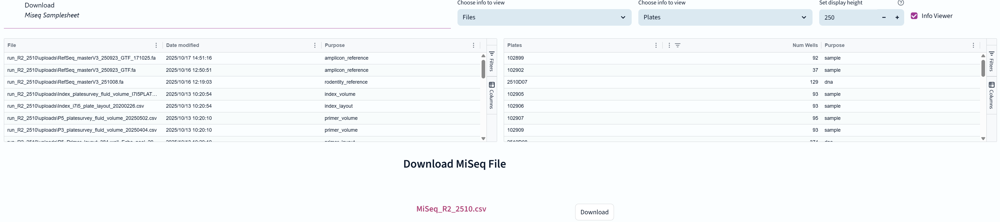

The fifth stage of the NGS genotyping pipeline involves sequencing the samples on the Miseq platform.

Miseq samplesheet files are generated at the same time that the index PCR picklists are created, so there is no need to generate them separately. Just download the file to USB when ready.
While the button exists here, you don't actually need to save the experiment at this stage.